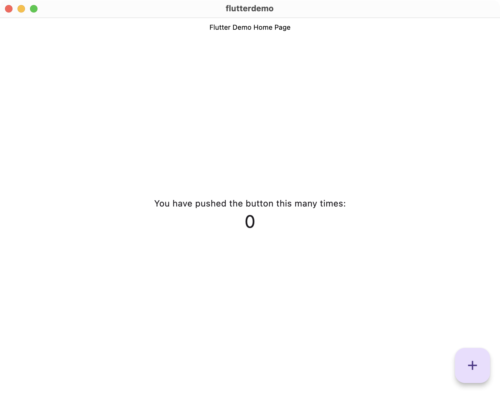

How to Make Your Flutter macOS App Look and Feel Native
June 28, 2025By default, Flutter uses Material Design, which is built around Android's visual language. While great for cross-platform apps, it clashes with the native look and feel of macOS, which follows Apple’s distinct design guidelines. For comparison, here's what a boilerplate Flutter Mac app looks like:

Even if you replace some widgets, the app still feels out of place for Mac users:

So what can we do to change this? Well, there are a few options:
Using a package
A common option is using a package likemacos_ui. While convenient, it has downsides: you’re tying your app’s UI to third-party code, which limits flexibility and control.
Furthermore, macOS UI is constantly evolving. Just a week ago, Apple released macOS Tahoe, which introduced a new aesthetic compared to the previous version. If you had built your app with this package, you might now find the UI outdated and no longer aligned with Apple's design language.
Manually styling the entire app
You could manually style every part of the app to better match the macOS design language, but this would be very time-consuming and impractical. The problem of fluidity of design languages still persists with this option, because if Apple were to release another UI update (which they will, eventually), you'd have to restyle every component all over again.So then, what should we do? Here's my solution:
Something in between
The sweet spot lies in between: avoid third-party UI packages, but also skip obsessively replicating macOS components. Instead, use subtle enhancements to make your app feel more at home on macOS. Let's start by changing the app bar and some colors.As you may have noticed, there is a slight purple tint as the background color in our Flutter app. Let's change that. Update your main.dart file per following:
Now, our app looks like this:

Hang in there, we have a few more things to do.
The next step is to tap into Xcode for some native adjustments. Open the macos folder in Xcode and make these changes:

Now, our app looks like this:

We're getting closer. Lastly, we will move the floating aciton button to the title bar. Make these changes to your code:
Now, our app looks like this:

Here is a before and after comparison:
With just a few simple tweaks, we've made our app look and feel significantly more native.
Happy coding!